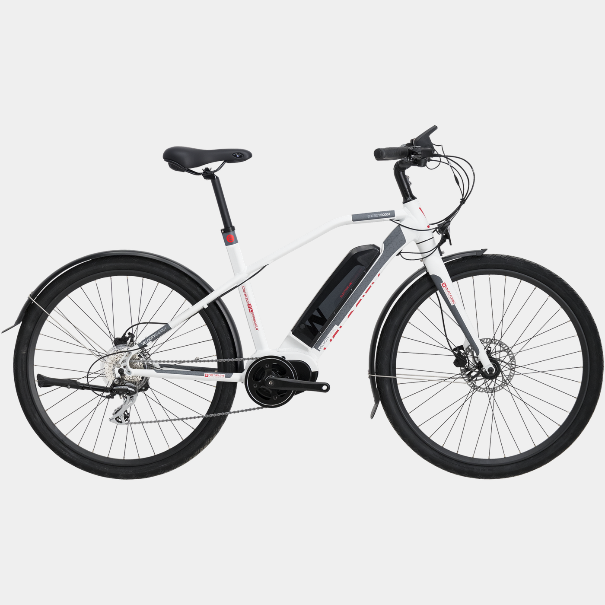
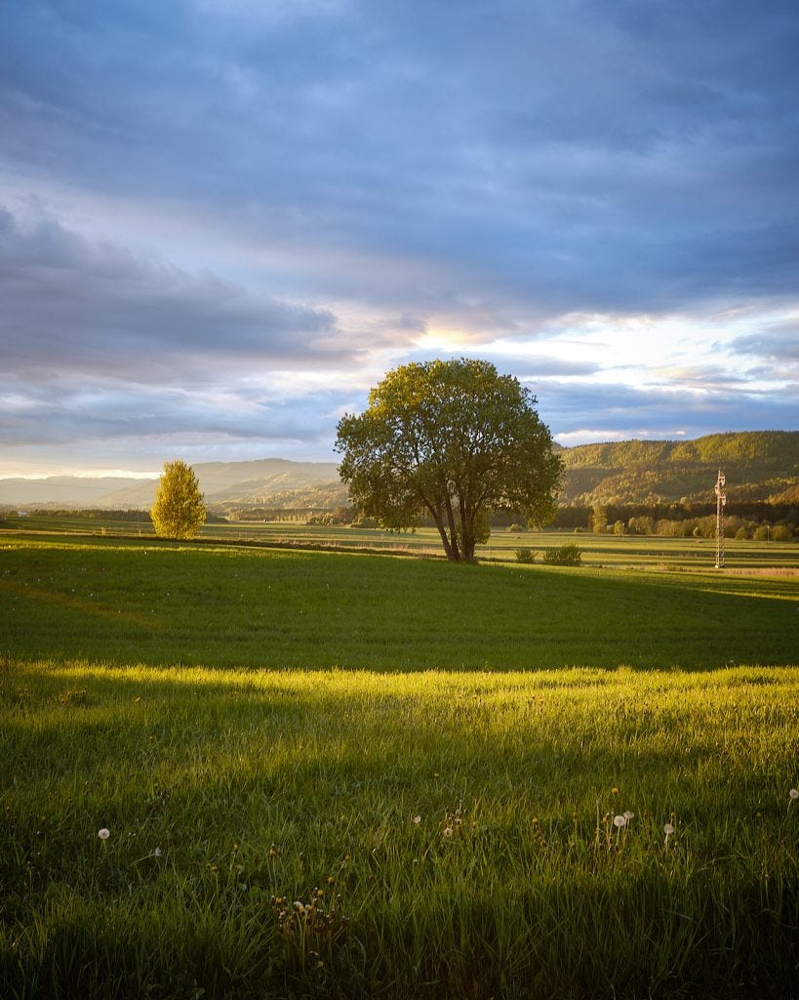
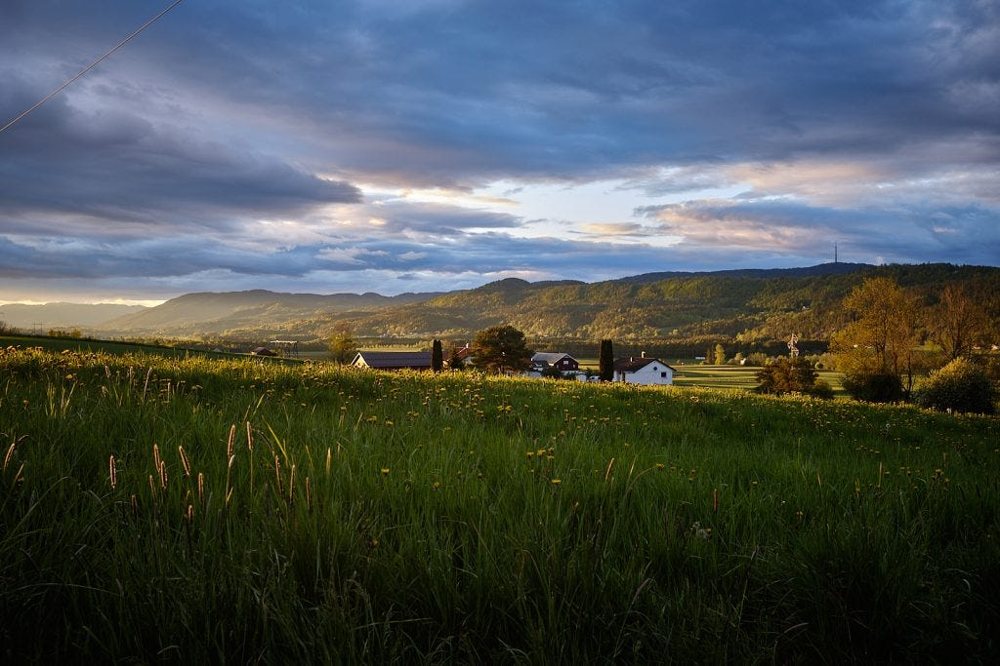
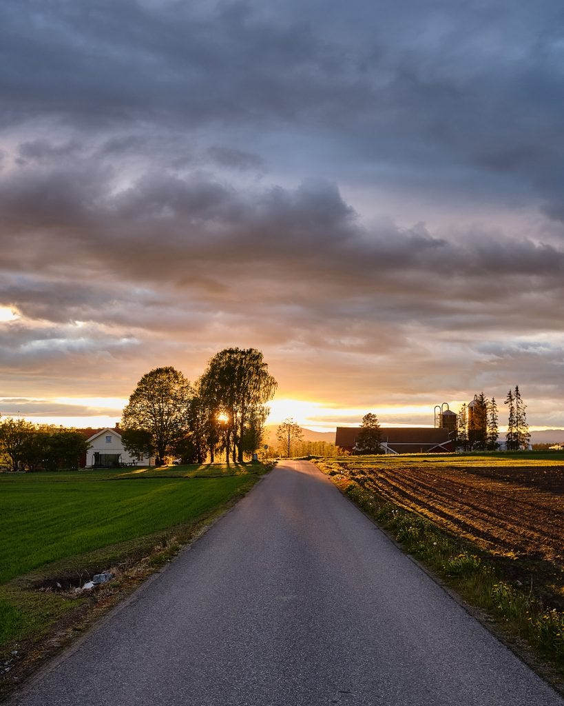

As a long time Queen fan and a huge fan of my electric bike, I think the title of the post is fitting for one of my more recent photo trips. I used the Fuji X100f, which is probably not known for landscape photos, but I just love that little camera and it’s my most used camera body.

[This bike](https://www.xxl.no/velocity-by-white-energy-boost-usx-20-no-elsykkel-hybrid-unisex-hvit/p/1172346_1_style) has a top speed of 25 km per hour, according to Norwegian law, and in our vicinity, there are lots of flat roads to just cruise and stop from time to time and take a few photos. Lately, we’ve seen deers and other animals as well. Especially my son has been into taking bike trips just as the sun is setting and our last trip gave us some great light to work with.

It almost seems over-processing, but honestly, the light was just incredible so the post-processing was very simple.


*Originally published at [http://weholt.org*](http://weholt.org/2020/05/29/i-want-to-ride-my-bicycle-i-want-to-ride-my-bike/).